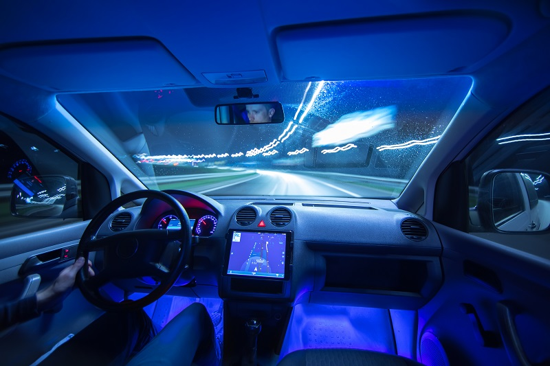

The Windshield. Why Is It A Totally Necessary Element Now?
Author: David Pesquera – Director, EuropeCorporate Supply Chain & Purch
06 May 2020
Did you know that when cars were invented the windshield was not a necessary element?
And that, in fact, it wasn't even added in the initial designs?
And that mirrors did not exist until a woman invented them so that she could put makeup on the car while traveling? And now they save more lives than other elements.
Yes, they do! Given the low speed at which the first cars were developed, a protective element for the occupants, such as a windshield, was not considered necessary
As the speed increased, the need arose to use this transparent element, not only to avoid the annoying draughts of the march, but also to protect passengers from dust, insects, stone throwing, etc.
But in the more advanced times and thanks to new materials, apart from the functions mentioned, the windscreen now plays a major role in safety because of its contribution to the strength of the vehicle's structure.
But speaking of racing cars. If you compare the windscreen of a street car with that of a racing car, curious differences arise, despite the characteristics that unite them, resulting in both cases to provide perfect visibility
The first difference is the composition. A street car mounts a rigid laminated glass windscreen, while racing cars use polycarbonate.
In motor sports, the cult of lightness is a priority, and with the use of polycarbonate, weight savings can be as high as 50%. The other advantage of this material is its superior impact resistance.
But polycarbonate cannot be used on the windshields of street cars for several reasons.
The first is its lack of rigidity, since a glass windscreen provides up to 30% of the structural strength of the car in the event of a rollover.
Obviously, racing cars do not need this contribution of rigidity because they incorporate a safety anti-tip structure that prevents the roof from collapsing. Another disadvantage is that it scratches very easily, blurring visibility while causing annoying reflections.
Consequently, it would have to be replaced with some frequency, with the consequent increase in maintenance costs, as well as making it more difficult to achieve perfect watertightness. Finally, polycarbonate is less transparent than glass, offering a poorer quality of vision.
In motor racing, keeping the windscreen clean so that it can provide the best visibility is a challenge. Racing cars leave a lot of dirt on the track, such as rubber chips from their tyres or traces of oil and other fluids.
Much of this debris is projected onto the windshield of the car behind, well attached to the front, as there is no requirement to maintain a safe distance in racing.
In competitions like the Le Mans 24 Hours, mechanics carefully clean the windscreen at every pit stop with effective cleaning products to maintain the best possible visibility throughout the 24-hour race. These stops take place approximately every 40 minutes.
However, the high speeds reached at Le Mans mean that dirt can become embedded in the windscreen, and sometimes this thorough cleaning is not enough. This is why thin, translucent plastic sheets are mounted on the windscreen, which are removed when they can no longer be cleaned, as the race progresses.
Each vehicle usually carries a maximum of eleven of these sheets; above this amount the image is distorted and the driver's visibility is compromised. The windscreen wipers should not be forgotten, as they have to work in very difficult conditions.
I hope you found it interesting !